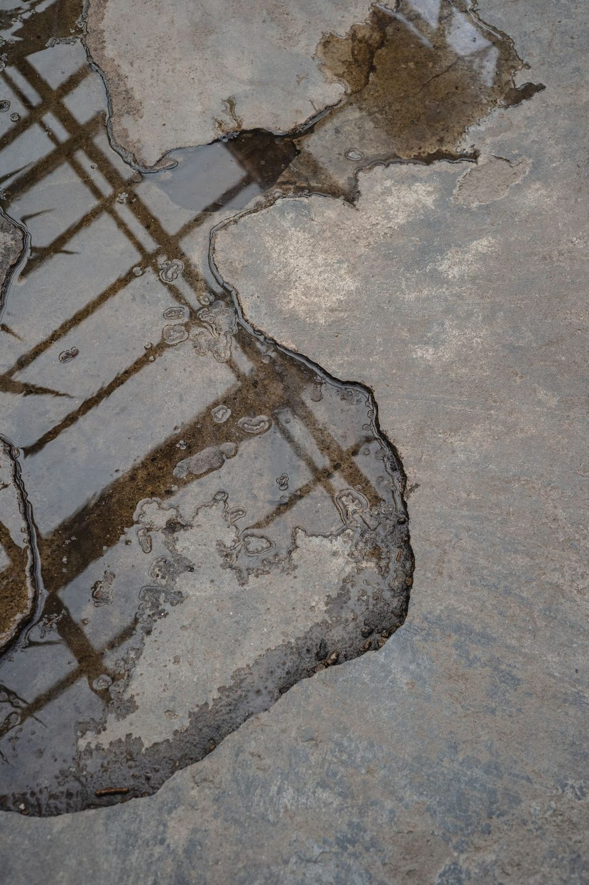

Crews on call now across Plano
Appliance Leak Water Damage Restoration in Plano, TX
Washing machine hose just blew? Dishwasher flooded the kitchen? Refrigerator ice maker line soaked the hardwood? Appliance leaks put 50 to 200 gallons on your floor in minutes, and in two-story Plano homes, that water runs through the subfloor to the ceiling below before you realize what happened. Call (214) 833-4785 for 24/7 emergency appliance leak cleanup.
- ✓ Washing machines
- ✓ Dishwashers
- ✓ Refrigerators & ice makers
Call Now: 24/7 Appliance Leak Cleanup | Contact Us
Quick Answer
What To Do
Does Insurance Cover Washing Machine Leak Damage?
Usually, yes. Sudden washer hose bursts and ice maker line breaks are typically covered as accidental water damage. The appliance itself and slow leaks often aren't. Plano homeowners should document everything immediately.
What Should I Do When an Appliance Floods My Plano Home?
Unplug the appliance or shut off the breaker to it. Close the water supply valves behind the appliance, washing machines have two (hot and cold), dishwashers have one under the sink, refrigerators have one behind or under the unit. If you can't reach the appliance valves, shut off the main water valve at the meter box. Move rugs, electronics and paper items off the wet floor. Then call (214) 833-4785, our IICRC certified crew extracts standing water, maps hidden moisture with FLIR thermal imaging, and places structural drying equipment the same visit.
Common Leaks
Common Appliance Leaks in Plano Homes
Washing Machine Hose Failure
Rubber washing machine supply hoses are the single most common cause of catastrophic appliance flooding. They crack and burst without warning, releasing full municipal water pressure (40-80 PSI) onto the laundry room floor. In Plano homes with second-floor laundry rooms, common in Deerfield, Canyon Creek, Hunters Glen, Kings Ridge and most homes built after 2000, the water flows through the subfloor into the ceiling and walls of the room below, often the living room, dining room or master bedroom.
Prevention tip: Replace rubber hoses with braided stainless steel supply hoses every 5 years, they cost $15 each and prevent the most expensive appliance water loss there is.
Dishwasher Leak
Dishwasher leaks come from failed door gaskets, cracked drain hoses, loose supply connections under the sink, and clogged drain lines that back up onto the kitchen floor. The water often runs under cabinets, behind the dishwasher, and under adjacent flooring, especially hardwood and LVP, before it becomes visible. By the time you see water on the kitchen floor, it may have been running under your cabinets for hours.
Refrigerator Ice Maker and Water Line
The ¼-inch copper or plastic supply line running to your refrigerator's ice maker and water dispenser connects behind or under the unit. These lines crack at fittings, get kinked when the refrigerator is pushed back against the wall, or corrode at brass compression fittings. A small drip runs unnoticed under the refrigerator for weeks, damaging the subfloor and adjacent hardwood.
Washing Machine Drain Overflow
A clogged washing machine drain line or a drain hose that pops out of the standpipe sends the entire wash and rinse cycle volume, 15 to 30 gallons per load, onto the floor. In Plano homes with a second-floor laundry, that's enough water to saturate the subfloor, damage the ceiling below, and run into wall cavities on both levels.

Hidden Water
Drying Under Kitchen Islands, Toe-Kicks and Built-In Cabinets
Dishwasher and fridge leaks love to hide under cabinets. The water sits beneath the cabinet base, on the subfloor, behind the toe-kick, where no one can see it.
Non-Destructive Toe-Kick Drying
We remove the toe-kick panel and push dry air into the cavity beneath the cabinets. In many cases, cabinets can be dried in place without removing them.
Particleboard vs. Plywood Cabinets
Particleboard swells and loses strength when it soaks up water. Plywood and solid wood handle it better. We test, dry and advise honestly on what can be saved.
Dishwasher Leaked Under the Kitchen Island
Islands sit on a closed base, which traps moisture. We open access points, dry the base and check the flooring underneath for trapped water.
Save Your Floors
Saving Hardwood After a Fridge or Dishwasher Leak
Kitchens and breakfast areas in West Plano homes often have hardwood that runs through the whole first floor. When a fridge water line leaks behind cabinets and buckles the wood floor, speed matters. Our hardwood floor drying system pulls trapped water from between the boards and underneath, which can flatten cupped boards before they need replacing.
Preventing Hidden Mold Behind Appliances
The space behind a fridge or dishwasher is dark, warm and rarely checked. A slow leak there can grow mold before anyone notices. We inspect behind and beneath appliances, apply antimicrobial treatment and verify dryness. If mold is already present, our mold remediation team handles it.
Gray Water From Washers and Dishwashers
Washer and dishwasher discharge is usually Category 2 (gray) water because of detergent, food residue and soil. That means extraction plus antimicrobial cleaning of affected surfaces. Supply line breaks are cleaner (Category 1), but any water left sitting can become more contaminated over time.
Is an Appliance Leak Covered by Insurance?
Sudden failures, like a burst washing machine hose or a cracked ice maker line, are often covered as sudden and accidental water damage. Slow leaks that went on for weeks may not be. The appliance itself is usually not covered. We document everything with photos, moisture readings and an estimate your adjuster can review.
Prevention
Simple Ways to Prevent the Next One
- Replace rubber washer hoses with braided stainless steel and swap them every five years
- Install water leak sensors behind the fridge, dishwasher and washer
- Put a drain pan with a drain line under upstairs washers
- Check the ice maker line connection once a year
- Turn off water to the washer when you leave for a trip
Restoration Process
Appliance Leak Damage Restoration Process
01
Source control
Appliance shut off, supply valves closed
02
Moisture mapping
FLIR thermal imaging and Protimeter readings identify water spread under cabinets, behind appliances, through subfloors and into wall cavities
03
Water extraction
Truck-mounted and portable extractors remove standing and trapped water from all affected materials
04
Cabinet assessment
Particleboard and MDF cabinet bases and kick plates that absorbed water are removed (they can't be dried and will grow mold). Plywood and solid-wood cabinets are dried in place
05
Structural drying
LGR dehumidifiers and air movers placed; wall-cavity drying systems if cavities are wet; hardwood floor mats if hardwood is affected
06
Daily monitoring
Moisture readings logged until every material hits dry standard
07
Reconstruction
Cabinets, flooring, drywall, paint and trim restored. See water damage reconstruction.
FAQ
Appliance Leak FAQs
My washing machine flooded the second floor, is the ceiling below damaged? +
Almost certainly. Water from a second-floor appliance leak flows through the subfloor, saturates insulation between joists, and soaks ceiling drywall on the floor below. Even if the ceiling isn't dripping yet, moisture is likely in the joists and drywall. FLIR thermal imaging confirms the extent without cutting anything open. Call (214) 833-4785.
Can hardwood floors be saved after a refrigerator leak? +
If caught early, within 24 hours, hardwood floor mat systems can pull moisture through the wood grain without removing boards. If the leak ran for weeks (common with slow ice maker line drips), the hardwood may be cupped, delaminated or have mold on the underside, requiring replacement. We assess and give you a direct answer on-site. Call (214) 833-4785. See hardwood floor water damage.
Does insurance cover appliance leak water damage? +
Yes, appliance failures are sudden and accidental water damage, which is covered under most Texas homeowner policies. The failed appliance itself usually isn't covered, but the resulting water damage to floors, walls, cabinets, ceilings and contents is. We document everything in Xactimate for your adjuster. Call (214) 833-4785.
Should I replace my washing machine hoses? +
If your washing machine has rubber supply hoses, replace them with braided stainless steel hoses immediately. Rubber hoses are the number one cause of catastrophic appliance flooding in Plano homes. Braided steel hoses cost $15 each and should be replaced every 5 years. Turn off supply valves when the machine is not in use if you'll be away from home for more than a day.
Appliance Just Flooded Your Plano Home? Call (214) 833-4785
Shut off the supply valves and call (214) 833-4785, 24/7 IICRC certified crew dispatched immediately. Extraction, FLIR mapping, structural drying, cabinet and flooring restoration. Don't wait for it to dry, water under cabinets and in subfloor grows mold within 48 hours.
Related Services
Related Services in Plano


Appliance Just Flooded Your Plano Home? Call (214) 833-4785
Shut off the supply valves and call (214) 833-4785, 24/7 IICRC certified crew dispatched immediately. Extraction, FLIR mapping, structural drying, cabinet and flooring restoration. Don't wait for it to dry, water under cabinets and in subfloor grows mold within 48 hours.
☎ Call (214) 833-4785
Ready when you are
Don't Wait on Water Damage
- ✓ Live answer 24/7, every day of the year
- ✓ Crew dispatched immediately
- ✓ On-site assessment
- ✓ Insurance-ready documentation